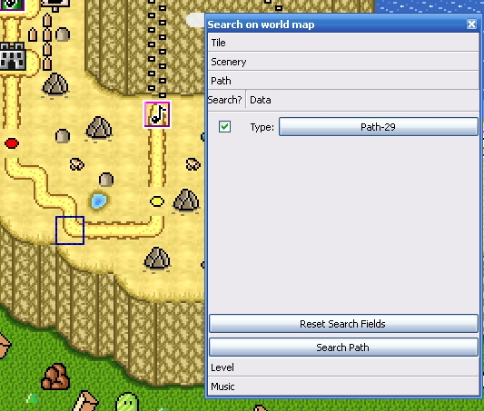

Also, you can find on the world map the necessary item by it's available properties.
Search toolbox available in the toolbar and have
this icon:  .
.
Search of the paths

Copyright © 2014-2015 Platformer Game Engine by Wohlstand project. All rights reserved.